PromiseHub · Video 82
The Waypoint merge, start to finish
Prompts 49 to 81: what came across, where it landed, and what waited
Prompts 49 to 81: what came across, where it landed, and what waited
learning, curriculum, mentoring, website| Estimate | Effort | Complete |
|---|---|---|
| Learning | 48 days | 100% |
| Curriculum | 27 days | 97% |
| Mentoring | 37 days | 100% |
| Website | 23 days | 94% |
docs/estimates/README.md
Lessons, quizzes, assignments, reflections, badges, a journey
A dashboard, grading, check-ins, at-risk flags
Cohorts and sessions, volunteers, guardians, messages, a public site
Its own apps, requirements and tests; read only, nothing loaded at build or run time
| Waypoint | PromiseHub |
|---|---|
| Cohort | A program with a term |
| Session | An event, with RSVP |
| Attendance | Roll Call: one attendance system |
| Application, referral | Enrollment, through the open enrollment link |
| Announcements, direct messages | Messages |
| Guardian accounts | None: verified-link guardian pages |
ADR 0043 · docs/adr/0043-merge-waypoint.md
| Waypoint | PromiseHub |
|---|---|
| MediatR, FluentValidation, controllers | Plain handlers, minimal API endpoints |
portal and public-site apps | One app, one library per feature |
| NUnit against SQL Server | xUnit against the fake database |
| Playwright against the real API | Playwright against the fake API, Chromium only |
| JWT with refresh tokens | Cookie sessions |
Lessons, quizzes, assignments, badges, the journey; authoring in Curriculum
The dashboard, grading, check-ins, at-risk flags, assigned work
Anonymous pages at /site/{address}, published content only
Each needs Roster · off until an admin turns it on · an off module answers 404
LearnMentorYouthRunSessions without RunAnySessionUseStaffApp; every new endpoint names its module and permission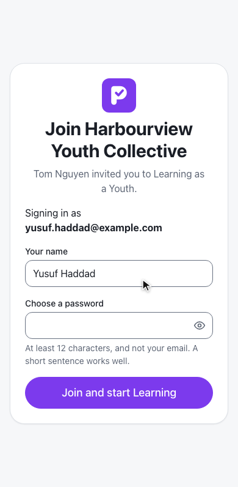
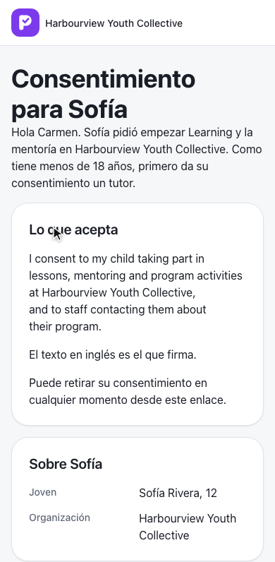

Videos 50 to 53 · ADR 0044 to 0047
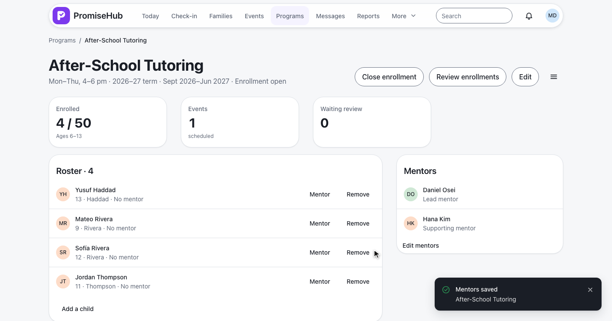
Video 54 · ADR 0048
Daniel’s youth, cohorts and check-ins; then My youth and a search.
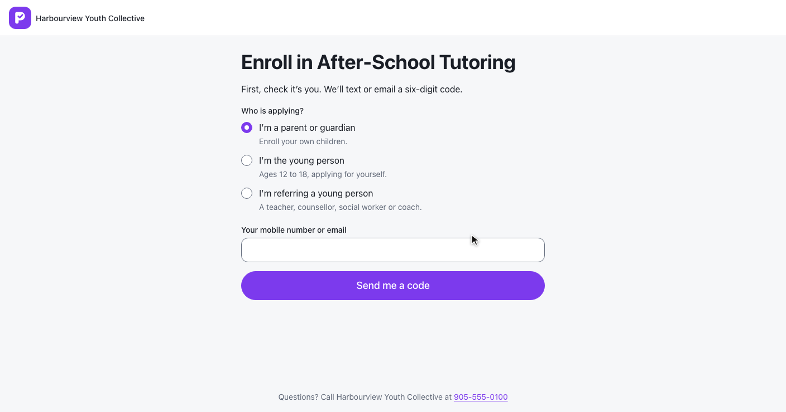
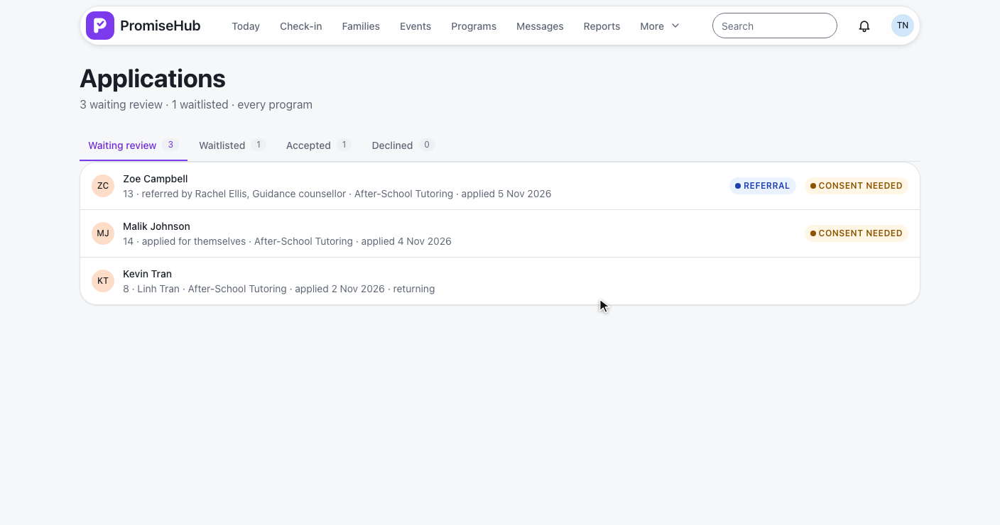
Videos 58 and 59 · ADR 0052, 0053
Assigned to you, continue where you left off, and the lesson it opens.
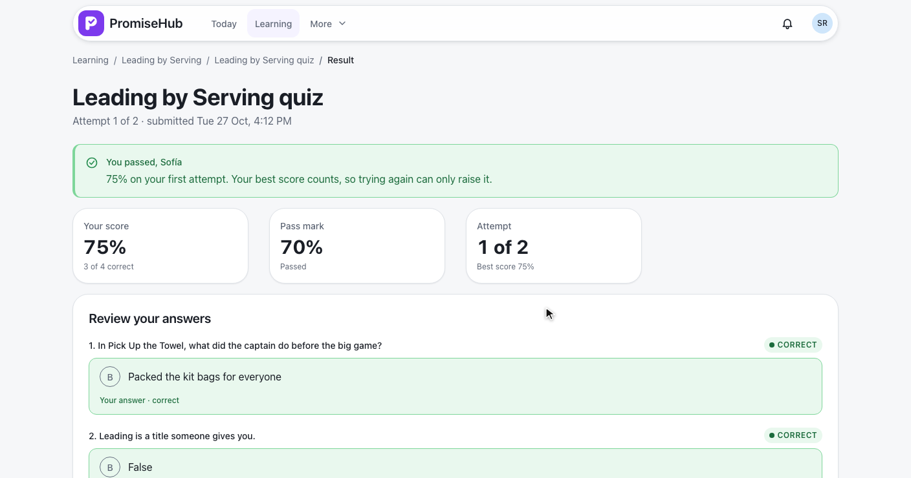
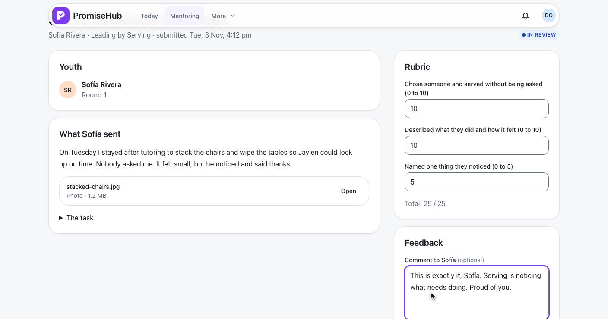
Videos 57, 61 to 63 · ADR 0051, 0055 to 0058
Badges earned and still to unlock, then quizzes and attendance.
Daniel raises a flag on Mateo, how serious and why.
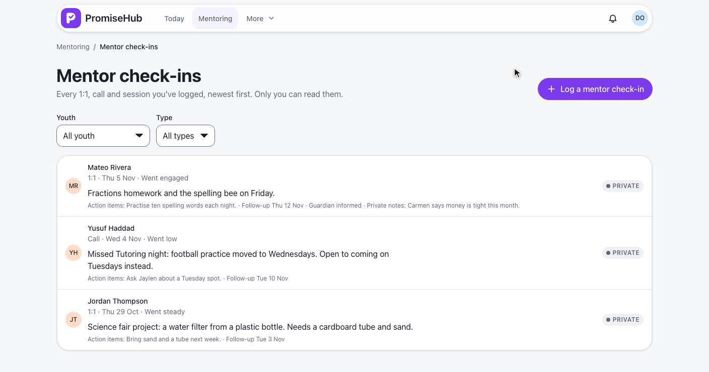
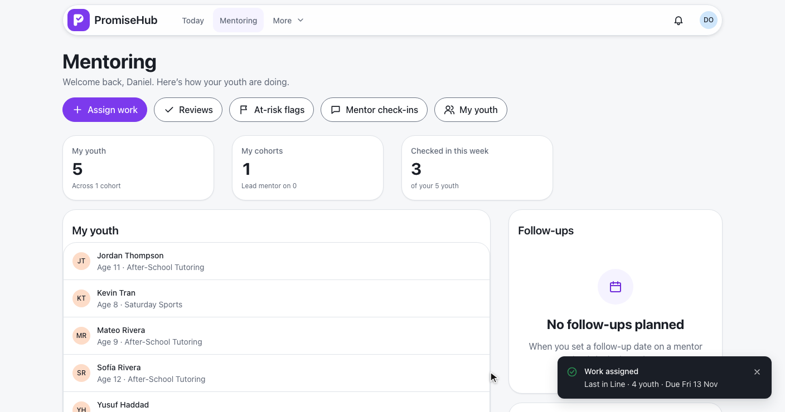
Videos 67 to 69 · ADR 0061 to 0063
Sofía is going to the field trip, with a note for staff.
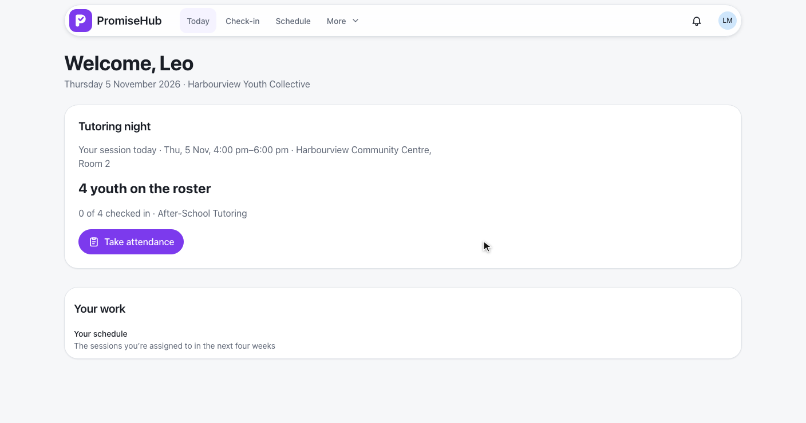

Videos 70 to 73 · ADR 0064 to 0067
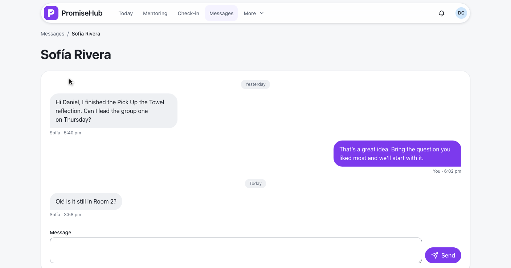
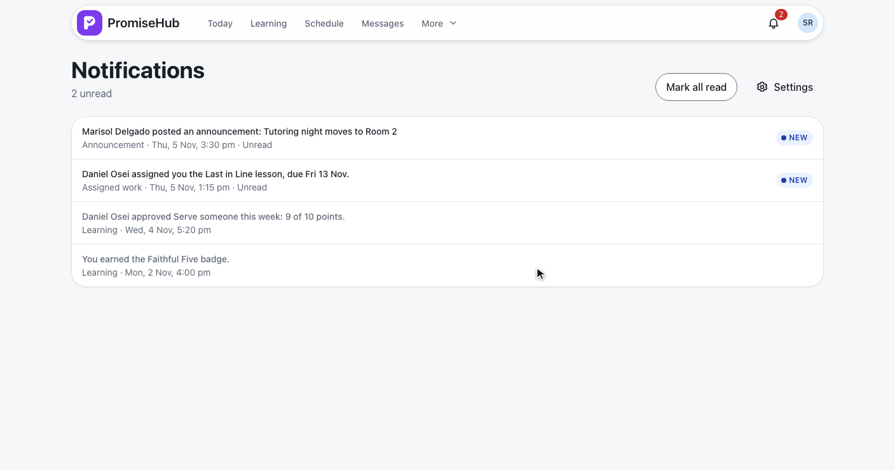
Videos 74 and 75 · ADR 0068, 0069
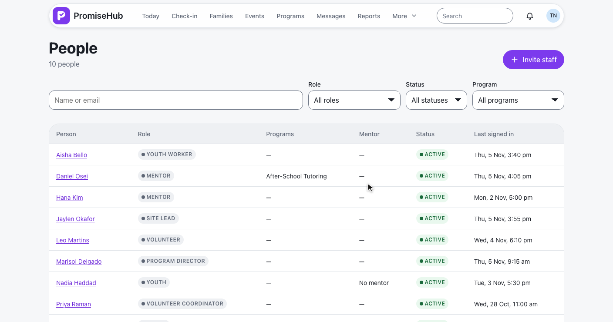
Video 76 · ADR 0070
Sofía’s email name is refused, then she lands on Learning.
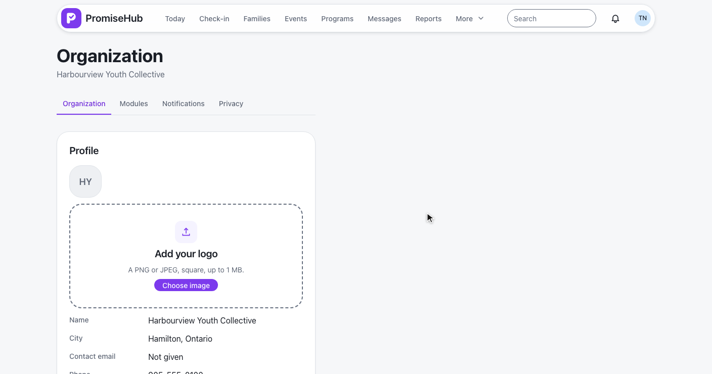
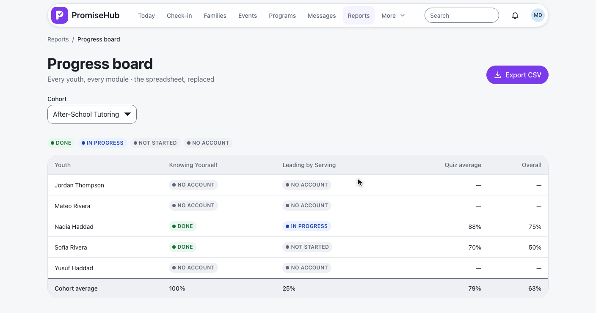
Videos 77 to 80 · ADR 0071 to 0074
Harbourview’s home page, chosen by its address.
The learning track, mentorship, then Apply.
| Area | Waiting | Where |
|---|---|---|
| Public website | A staff inbox; a real payment provider | ADR 0075 |
| Curriculum | Authoring a lesson’s kind, passage, starter code; chunked upload, transcoding | Video 57 · ADR 0050 |
| Mentoring | Automatic at-risk flags; reminders on assigned work | ADR 0062, 0063 |
| Sessions | Editing a whole series at once | ADR 0064 |
| Notifications | Email and push per kind, quiet hours | ADR 0069 |
| People | Profile editing on the record; an admin sending a reset | ADR 0070, 0071 |
| Reports | Date ranges, comparisons, PDF exports | ADR 0074 |
That is the Waypoint merge, start to finish